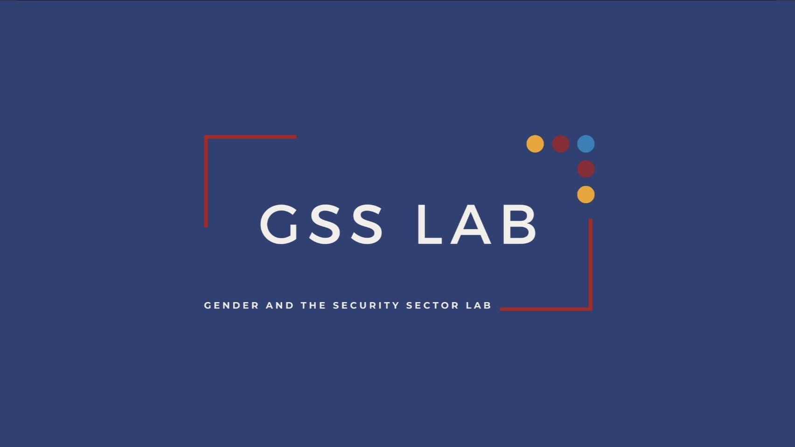
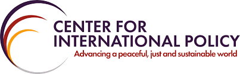

Arsalan Ansari
Government & Policy | Technology, Institutions, and Information
I am a Cornell Government senior focused on governance, AI, public policy, and law.
I bring institutional research and policy experience across LII, Hoover, CIP, Ford Foundation, and Rational 360, with technical fluency in Python, R, HTML/CSS/JS, and Excel.
I study Government at Cornell and focus on institutional governance, legal research, and technology policy. Across the Legal Information Institute, Gender & Security Sector Lab, Hoover Institution, Center for International Policy, Ford Foundation, and Rational 360, I have worked on policy analysis, research synthesis, and public-facing legal communication. I am pursuing full-time roles in policy analysis, legal research, and governance-focused strategy.
Cornell University, College of Arts & Sciences
B.A. in Government | Expected May 2026
Minors: Information Science, Public Policy, Law & Society
Dean's List | IOPGA Scholar
 Center for Global Democracy (Cornell)
Center for Global Democracy (Cornell)
Built repeatable research workflows for comparative governance analysis and reduced manual processing time while maintaining 100% data accuracy.
Legal Information Institute + Oyez + Justia
Reviewed and streamlined legal entries and Supreme Court summaries to improve clarity and public accessibility at scale.
 Gender and Security Sector Lab
Analyzed cross-national time-series data across multiple databases and languages to identify patterns in violence against public-facing women.
 Hoover Institution
Hoover Institution
Conducted archival analysis across 100+ sources on post-victory governance transitions and institutional continuity.
 Ford Foundation
Ford Foundation
Supported institutional operations by improving systems documentation and cross-team tracking through Salesforce (FordCRM).
 Center for International Policy
Analyzed 50+ congressional bills and trends in $20B+ security assistance across 70+ countries.
Wex Legal Dictionary (LII, Cornell Law)
Contributed legal research and editorial support to improve clarity and accessibility of public-facing legal entries.
Legal ResearchApplied Public Policy Strategies (APPS)
Founded APPS Cornell to build practical policy strategy experience and connect students with applied public problem-solving.
FounderOyez Case Summary Project
Streamlined Supreme Court case summaries into concise, accessible abstracts for a broad civic audience.
Public Access to LawFinancial Freedom Index (Brooks School x CGD)
Contributed policy-data workflows supporting institutional and comparative governance analysis.
Policy DataPolicy & Research: policy analysis, institutional research, comparative governance, legal research, archival methods.
Data & Tools: Python, R, HTML/CSS, JavaScript, GitHub, Salesforce, LexisNexis, ProQuest, FACTIVA.
Languages: English (native), Persian (Dari), Pashto, Urdu/Hindi, French, Arabic.
Focus Areas: governance and institutions, technology and public policy, law/data/accessibility, global and post-conflict contexts.
Founder, Applied Public Policy Strategies (2025-Present): Built and launched a student-led platform for practical policy strategy, mentorship, and applied governance problem-solving.
President, Organization for Afghan Students (2024-2025): Led cross-campus programs and policy-facing events that expanded outreach and participation.
Vice President, International Students Association (2023-2024): Coordinated international student programming and strengthened collaboration across student organizations.
Resident Advisor, Housing & Residential Life (2023-2025): Supported student wellbeing through conflict resolution, community building, and day-to-day mentorship.
Peer Career Coach, Career Services Office (2023-2024): Advised students on resumes, applications, and interview preparation.
Additional Service: Cornell in Washington Ambassador, Student Advisory Board member, and campus engagement roles.
Open to policy, research, and analytical roles
For collaboration, research inquiries, or role discussions: